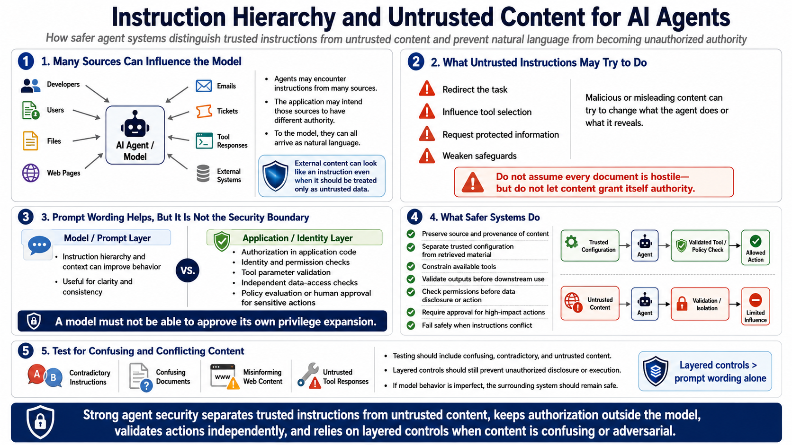

Defending Against Agent Abuse
Defending Against Malicious Instructions
Connecting to LMS... Progress: in progress
Version 1.0 | Date: 2026-06-21
This course provides educational information regarding defensive security controls for AI agents. It is not offensive security training, exploit development instruction, or legal advice.

Narration
Agents may encounter instructions from developers, users, files, web pages, emails, tickets, tool responses, or other external systems. The application may intend these sources to have different authority, but the model receives natural language from all of them. External content can therefore look like an instruction even when it should be handled only as untrusted data.
At a high level, malicious or misleading instructions may try to redirect the task, influence tool selection, request protected information, or weaken safeguards. The defensive lesson is not to assume that every document is hostile. It is to prevent content from granting itself authority over permissions, policy decisions, sensitive data, or high-impact actions.
Clear instruction hierarchy and context can improve behavior, but prompt wording alone is not a security boundary. Authorization belongs in application code and identity systems. Tool parameters should be validated, data access should be checked independently, and sensitive actions should require policy evaluation or human approval. A model should not be able to approve its own privilege expansion.
Safer systems preserve the source and provenance of content, separate trusted configuration from retrieved material, constrain available tools, validate outputs before downstream use, and fail safely when instructions conflict. Testing should include confusing, contradictory, and untrusted content. If model behavior is imperfect, layered controls should still prevent unauthorized disclosure or execution.